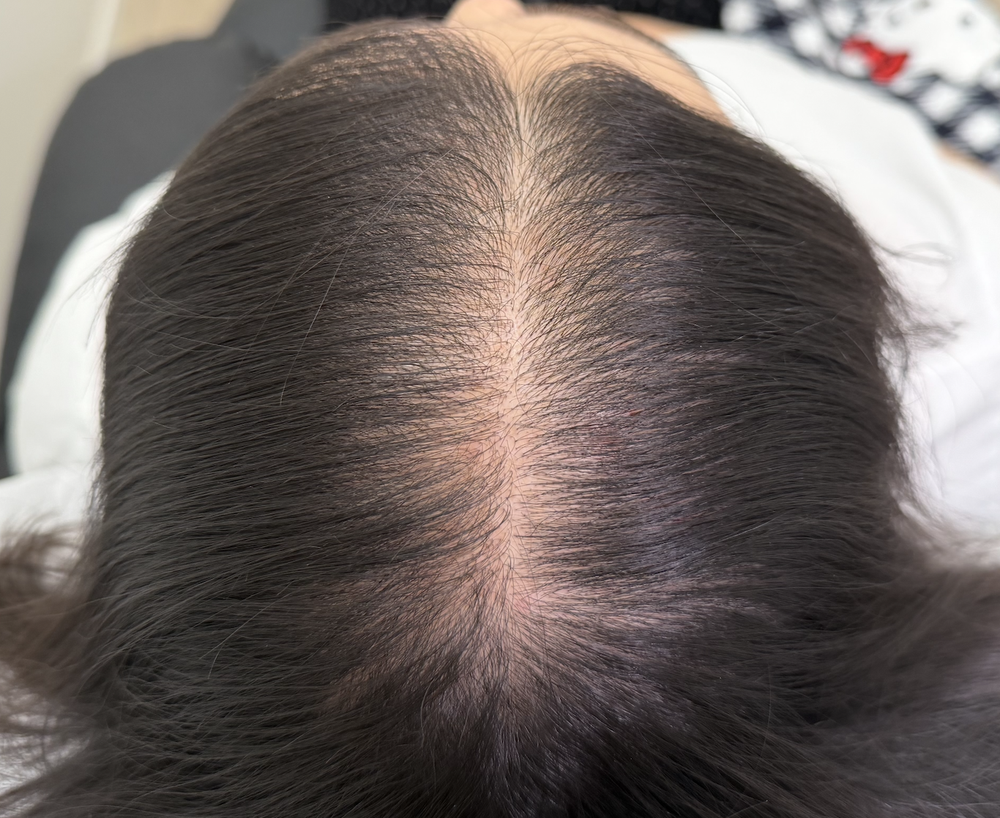
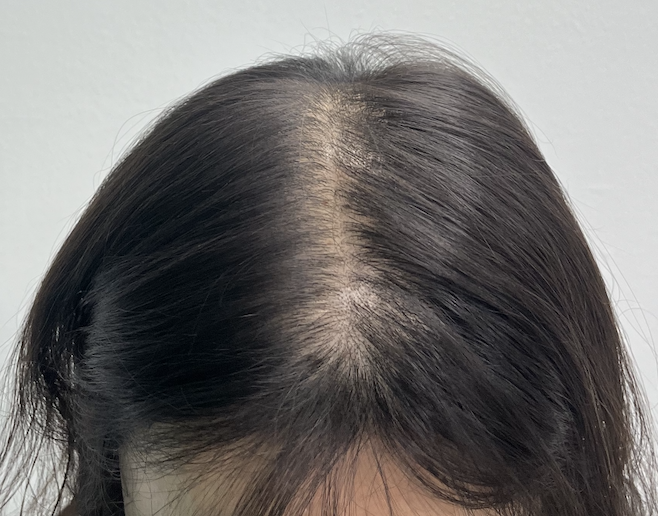
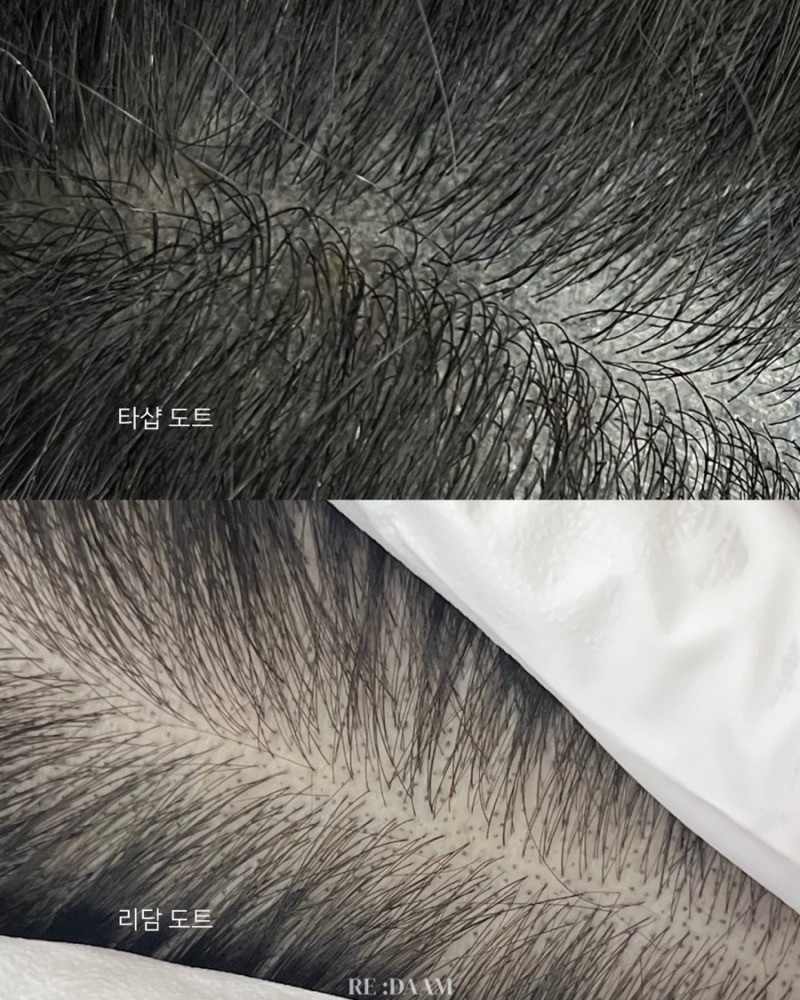
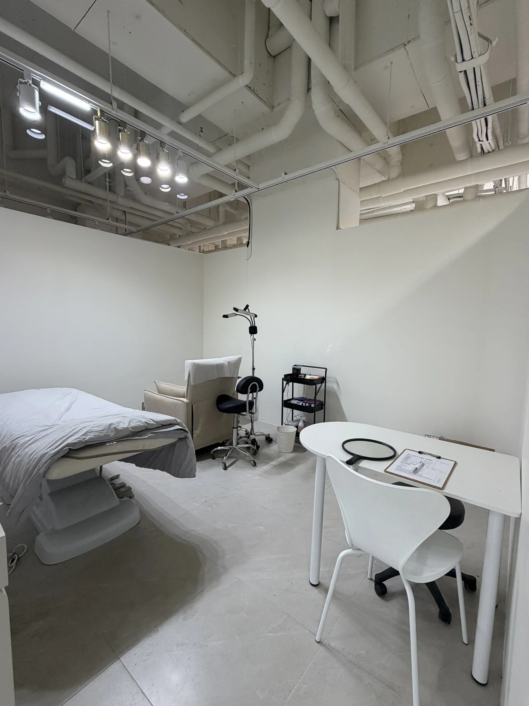

고민부터 듣는 상담
원하는 모습과 걱정되는 부분을
충분히 이야기합니다.
회차별로 밀도를 확인하며
최초 시술일 기준 무료 리터치
상담 후 시술 여부 결정
안녕하세요. RE:DAAM SMP 정예린 원장입니다.
자연스러움의 기준은 사람마다 다릅니다. 어느 부분이 신경 쓰이는지, 어떤 결과를 기대하는지 충분히 이야기 나누고 시술 방향을 함께 정합니다.
시술이 적합하지 않을 수도 있습니다. 무조건 권하기보다 현재 상태에서 가능한 표현과 한계를 솔직하게 설명드리겠습니다.
비어 보이는 곳을 무조건 채우지 않습니다. 가장 신경 쓰이는 부위와 원하는 분위기를 먼저 듣고, 기존 모발과 두피 상태에 어우러지는 표현을 고민합니다.
원하는 모습과 걱정되는 부분을
충분히 이야기합니다.
기존 모발과 두피 상태를 살펴
어울리는 범위를 함께 정합니다.
한 번에 진하게 채우기보다
반응과 밀도를 확인하며 진행합니다.
같은 두피 고민도, 필요한 표현은 다릅니다.
내 고민을 선택해 상담 포인트를 확인하세요.

가르마의 폭만 보지 않습니다. 모발이 자라는 방향과 주변 밀도를 함께 살피고, 비쳐 보이는 범위를 상담합니다.
기존 모발 사이에 어우러지는 밀도와 범위

평소 거울에서 보기 어려운 정수리. 모발의 흐름과 두피가 드러나는 범위를 확인하고, 필요한 표현을 함께 정합니다.
가까이 본 모습과 전체적인 균형

한 번에 진하게 채우기보다 회차별로 두피 반응과 표현을 확인합니다. 점의 크기와 간격, 기존 모발과의 어울림을 중요하게 생각합니다.
점 하나의 크기·간격과 모발 사이의 조화
자연스러움은 진하기만으로 결정되지 않습니다.
리담은 미세한 점의 크기와 간격을 살펴,
기존 모발 사이에 어우러지는 밀도를 표현합니다.
선을 따라 표현하면 일정한 방향이 생깁니다.
하지만 가르마를 바꾸거나 머리를 넘기면 모발의 흐름도 달라집니다.
리담은 그 변화까지 고려해 디자인합니다.
자연스러움의 차이는 점 하나에서 시작됩니다.
리담은 점의 크기와 간격을 섬세하게 조절해,
기존 모발 사이에 나에게 맞는 밀도를 쌓아갑니다.
표현 방식의 이해를 돕기 위한 개념 이미지입니다.
실제 시술 사진으로 확인하기 ↗상담을 받아본 뒤
시술 여부를 결정하셔도 괜찮습니다.
가장 신경 쓰이는 부위와 원하는 느낌부터.
기존 모발과 어우러지는 범위를 함께 확인합니다.
두피 반응과 밀도를 살피며 진행합니다.
리담의 실제 시술 전후 사진입니다.
리담 SMP에서 제공한 실제 시술 사진입니다. 촬영 조건과 개인 상태에 따라 표현과 경과는 다를 수 있습니다.
두피에 미세한 점 형태로 색소를 표현해 비쳐 보이는 부위를 시각적으로 보완하는 방식입니다. 기존 모발과 두피 상태를 고려하며, 모발이 자라게 하는 시술이나 탈모 치료는 아닙니다.
기존 모발의 밀도와 방향, 두피 상태를 고려해 디자인하고 회차별로 표현을 조절합니다. 자연스러운 표현을 목표로 하지만 개인의 상태와 시술 조건에 따라 결과는 달라질 수 있습니다.
통증은 개인의 민감도와 시술 부위에 따라 다릅니다. 상담에서 궁금한 점을 충분히 나누고, 시술 중에도 상태를 확인하며 진행합니다.
일반적으로 3회에 걸쳐 진행하지만 두피 상태와 시술 범위에 따라 달라질 수 있습니다. 유지 정도도 피부 타입, 생활 습관, 사후 관리에 따라 차이가 있습니다. 필요한 회차와 포함 비용은 상담에서 안내드립니다.
아니요. 15만 원은 가르마 1회차 체험 가격입니다. 전체 시술 상품과 별도이며, 적용 부위와 후속 회차 비용, 전체 상품으로 진행할 때의 조건은 예약 전에 상담으로 확인해주세요.
최초 1회차 시술일로부터 1년 이내 무료 리터치가 포함된다는 안내를 기준으로 합니다. 적용 횟수와 범위, 예약 가능 시기는 상담에서 확인해주세요.
색소 번짐, 점의 퍼짐, 부자연스러운 밀도 표현 등이 발생할 수 있습니다. 개인의 두피 상태와 시술 조건에 따라 차이가 있으며, 상담에서 가능한 표현과 주의할 점을 안내드립니다.
네. 두피 상태와 고민 부위를 살펴보고 설명을 들으신 뒤 결정하셔도 괜찮습니다. 상담 문의만으로 예약이나 시술이 확정되지는 않으며, 매장과 일정을 협의한 후 확정됩니다.
최초 1회차 시술일 기준 1년 이내
무료 리터치가 포함됩니다.
상담과 시술에 집중할 수 있도록
고객별 위생과 공간의 청결을 기본으로 지킵니다.

현재 두피 사진과 고민 부위를 알려주세요.
일정은 매장의 답변 후 확정됩니다.
상담은 이렇게 시작하세요.
가르마나 정수리가 보이는 사진을 준비해주세요.
신경 쓰이는 부분과 걱정되는 점을 알려주세요.
시술 범위·회차·비용을 확인한 뒤 선택하세요.